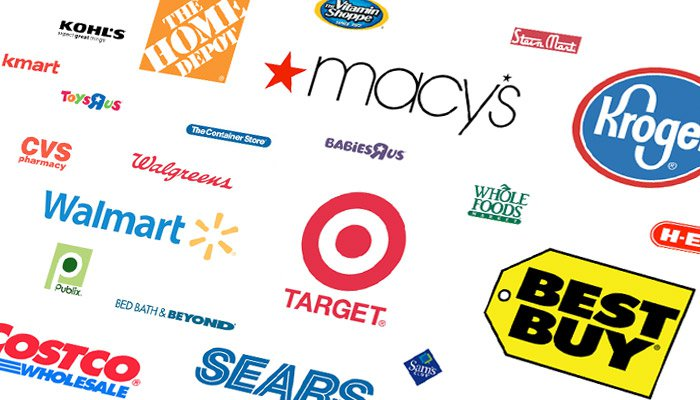

Retail is huge business where our economy relies on. General Managers to staff member, there goal is to provide excellence service to customers.
Alot of Retail businesses such as Walmart, Macy's, Best Buy, ect uses the service to monitor customer satisfaction.

©PackJMT